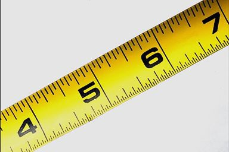

男性腰围超过 90公分（约35.5吋）， 女性腰围超过 80公分（约31.5吋）， 即可称为肥胖。
 当腰臀比超出 0.9（男性）丶大於等於 0.85（女性），易罹患心血管疾病丶高血压丶动脉粥状硬化丶糖尿病丶高血脂症等慢性病。 量测方式 腰围: 双脚并拢, 腹部肌肉放松,手臂自然放在两侧, 正常呼吸, 已无弹性卷尺测量肋骨以下, 肚脐以上之身体最细位置。
臀围: 测量臀部最宽的位置。 现在就来看看您的数值所代表的意义吧！